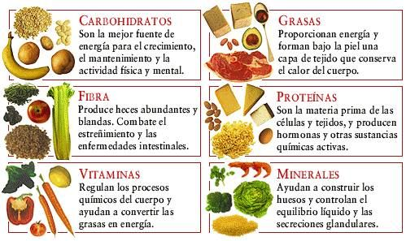
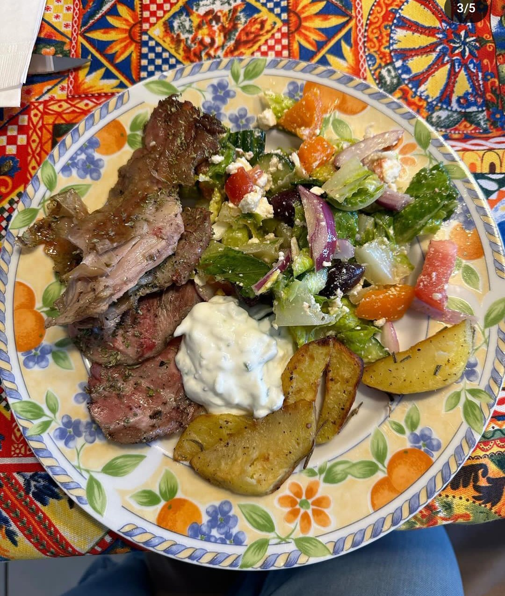
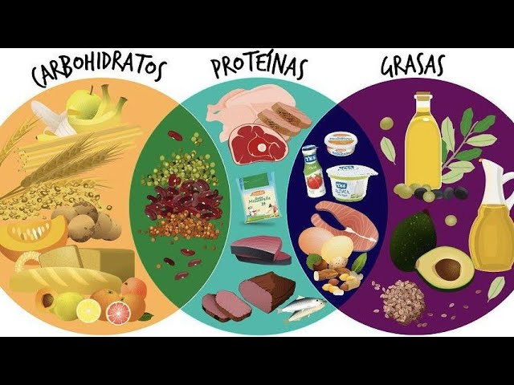

R.MENU
Te has puesto fino durante las vacaciones y ahora has decidido apuntarte al gimnasio. Si vas, te serviran estos consejos sobre como alimentarte correctamente. Mejorar la alimentacion y moverse mas son claves para mantenerte sano por dentro y por fuera.La alimentacion y la actividad fisica son un tandem inseparable cuando hablamos de estilo de vida saludable. Estamos hechos para movernos, pero de nada sirve quemar calorias como si no hubiese un manana si luego nos ponemos hasta las trancas de pizzas precocinadas.

Durante la semana, lo mejor es seguir las recomendaciones del plato saludable o plato de Harvard. Imaginate un plato normal y corriente, de esos que tienes en casa. Dividelo por la mitad. Una de esas mitades tiene que estar llena de colores: verduras, hortalizas y frutas variadas. Ahora fijate en la otra mitad, aun vacia, y dividela de nuevo en dos partes. Una de esas partes deben ocuparla los alimentos proteicos de buena calidad: aves, pescados, huevos, legumbres, tofu o tempeh. La parte que nos queda aun vacia, ira llena de alimentos ricos en hidratos de carbono complejos: arroz, granos y pasta en version integral, patatas, boniato o legumbres (si, las legumbres son muy versatiles, ademas de deliciosas, y tambien tienen hidratos de carbono). Prepara todos esos alimentos con aceite de oliva, bebe agua para hidratarte y tendras mucho ganado.
Aunque los hidratos de carbono sean tan poco populares, son fundamentales para el rendimiento muscular. La cantidad que necesites consumir dependera del programa de entrenamiento y de los objetivos que tengas, pero, para que te hagas una idea, cuanto mas intenso sea el entrenamiento, mas hidratos de carbono debera aportar tu alimentacion.Para los mortales como tu y como yo, seguir el modelo del plato saludable puede resultar de gran ayuda para hacer una estimacion de la proporcion de hidratos de carbono que podemos incluir en nuestra alimentacion. Muchas personas creen que deben comer algo que les aporte hidratos de carbono antes de entrenar. Esta practica, que puede ser interesante en deportistas profesionales y de alto rendimiento, o cuando se hacen practicas deportivas de mas de 90 minutos, nos puede sabotear la perdida de grasa.

Uno de los mayores mitos que hay en alimentacion y deporte es que,como los musculos estan hechos de proteinas, es necesario consumir una gran cantidad de ellas para desarrollar masa muscular. Ya te imaginaras que esto es mas falso que un unicornio y es que para desarrollar la masa muscular lo que hay que hacer es ejercitarla.Es cierto que los deportistas profesionales tienen unos requerimientos proteicos mayores, pero no se alejan excesivamente de los de la poblacion general. Tu, que has decidido apuntarte al gimnasio e ir tres veces a la semana -lo cual esta muy bien-, sigues siendo poblacion general.Asi que, al igual que con los hidratos de carbono, centrate en las proporciones de alimento proteico que indica el plato saludable y dejate de gastarte el dinero en batidos de proteina y otros suplementos.

Aunque practiques actividad fisica, no tienes que restringir el consumo de grasas. Un consumo adecuado de grasas asegura una salud optima, ayuda a mantener el balance energetico y, algo muy importante, asegura que ingiramos suficientes vitaminas liposolubles y acidos grasos esenciales. Por eso las recomendaciones tampoco cambian: escoge aceite de oliva para cocinar y alinar, y alimentos ricos en grasas saludables como el aguacate, los frutos secos y las semillas para complementar tus platos. Y no te olvides del pescado azul, al menos una vez a la semana. Si sigues las recomendaciones descritas mas arriba, estaras bien cubierto de vitaminas, minerales y otros componentes dieteticos como antioxidantes. Los suplementos de vitaminas y minerales no son necesarios cuando la alimentacion es correcta, ni siquiera en deportistas de alto rendimiento. .
Una buena hidratacion es fundamental para el mantenimiento de la salud y cuando se practica actividad fisica esta recomendacion adquiere especial relevancia.
Es clave hidratarse antes, durante y despues del ejercicio fisico. Asi, durante las horas previas al entrenamiento nos aseguraremos de beber suficiente agua. Durante el entrenamiento, iremos dando pequenos sorbos de agua cada 10-20 minutos, segun la intensidad del ejercicio, temperatura y humedad del ambiente.
Una vez terminada la actividad fisica, ademas de volver a beber agua, nos ayudara en la recuperacion consumir alimentos como frutas y vegetales que, ademas de agua, nos aportan sales minerales.